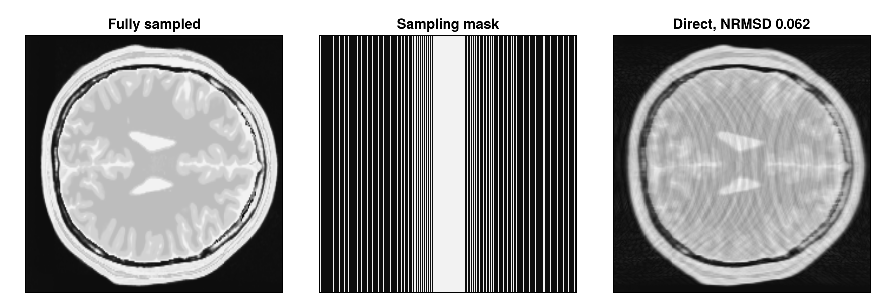
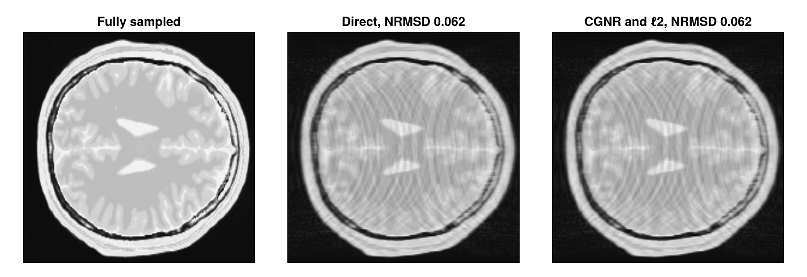
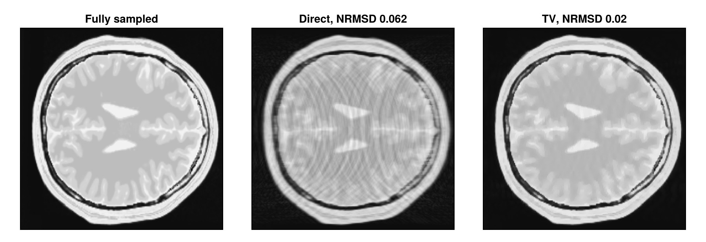
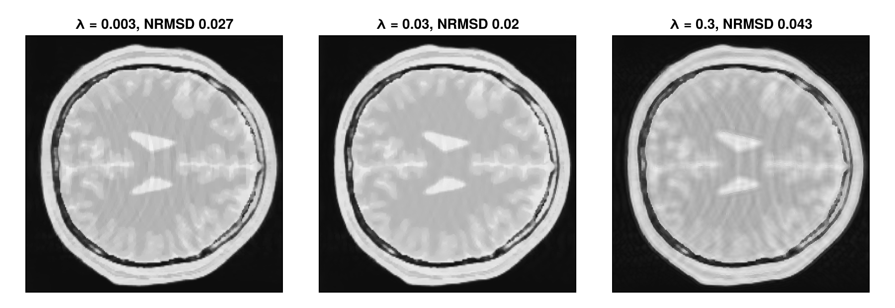

Iterative Reconstruction
Acquiring fewer k-space samples shortens the scan, but a direct reconstruction of undersampled data shows artifacts. An iterative reconstruction instead searches for the image that agrees best with the measured samples, and it can use prior knowledge about the image. This tutorial undersamples single-coil data and compares the direct reconstruction with the iterative reconstruction type "standard".
Besides MRIReco, the tutorial needs MRIFiles to read the data, MRISampling to undersample it and CairoMakie for the plots. We use the same plotting function as in Direct Reconstruction.
using MRIReco, MRIFiles, MRISampling, CairoMakie
function showimages(images, titles; columns = length(images))
fig = Figure(size = (300 * columns, 310 * cld(length(images), columns)))
for (i, (image, title)) in enumerate(zip(images, titles))
ax = Axis(fig[fldmod1(i, columns)...], title = title,
aspect = DataAspect(), yreversed = true)
heatmap!(ax, image', colormap = :grays)
hidedecorations!(ax)
end
return fig
endLoading the Data
The data is a simulated single-coil dataset of a brain image with 256 × 256 pixels, fully sampled on a Cartesian grid. The file is included in the MRIReco.jl repository. The direct reconstruction of the fully sampled data serves as the reference. Of the six dimensions of the reconstructed image, we keep x and y and take the magnitude:
datadir = joinpath(pkgdir(MRIReco), "docs", "src", "examples", "data")
filename = joinpath(datadir, "acqDataBrainSim100.h5")
acqData = AcquisitionData(ISMRMRDFile(filename))
params = Dict{Symbol, Any}()
params[:reco] = "direct"
params[:reconSize] = (256, 256)
referenceImage = abs.(reconstruction(acqData, params)[:, :, 1, 1, 1, 1])Undersampling
To simulate an acquisition that is three times faster, sample_kspace keeps about a third of the profiles. They are chosen by variable-density Poisson-disk sampling, which samples the center of k-space more densely than the outer parts. The result is a new AcquisitionData object that stores the indices of the kept samples in subsampleIndices:
acqDataSub = sample_kspace(acqData, 3.0, "vdPoisson")
samplingMask = zeros(256, 256)
samplingMask[acqDataSub.subsampleIndices[1]] .= 1The direct reconstruction treats the missing samples as zeros, which causes aliasing artifacts. We measure the deviation from the reference with nrmsd, the normalized root mean squared deviation:
directImage = abs.(reconstruction(acqDataSub, params)[:, :, 1, 1, 1, 1])
deviation(image) = round(nrmsd(referenceImage, image), sigdigits = 2)
showimages([referenceImage, samplingMask, directImage],
["Fully sampled", "Sampling mask",
"Direct, NRMSD $(deviation(directImage))"])
Iterative Reconstruction
The reconstruction type "standard" solves the regularized least-squares problem
\[\underset{\mathbf{x}}{\operatorname{argmin}} \; \frac{1}{2}\lVert \mathbf{E}\mathbf{x} - \mathbf{b} \rVert_2^2 + \mathrm{R}(\mathbf{x}),\]
where $\mathbf{b}$ contains the measured samples, the encoding operator $\mathbf{E}$ maps an image $\mathbf{x}$ to these samples, here by a Fourier transform followed by the undersampling, and $\mathrm{R}$ is a regularization term. The solvers and regularization terms come from RegularizedLeastSquares.jl, which using MRIReco loads.
We first use CGNR, the conjugate gradient method applied to the normal equations, with a small $\ell_2$ regularization $\mathrm{R}(\mathbf{x}) = \lambda \lVert \mathbf{x} \rVert_2^2$:
params = Dict{Symbol, Any}()
params[:reco] = "standard"
params[:reconSize] = (256, 256)
params[:solver] = CGNR
params[:reg] = L2Regularization(1e-3)
params[:iterations] = 20
imageL2 = abs.(reconstruction(acqDataSub, params)[:, :, 1, 1, 1, 1])
showimages([referenceImage, directImage, imageL2],
["Fully sampled", "Direct, NRMSD $(deviation(directImage))",
"CGNR and ℓ2, NRMSD $(deviation(imageL2))"])
The result is practically the same as the direct reconstruction. The data term only involves the measured samples, and the $\ell_2$ term prefers small values, so the missing samples stay zero. To fill them in, the regularization has to describe the image better.
Total Variation
Total variation (TV) regularization, $\mathrm{R}(\mathbf{x}) = \lambda \operatorname{TV}(\mathbf{x})$, favors images that consist of regions with constant intensity, like this simulated brain. We solve the problem with ADMM, which is also the default solver. With MeasurementBasedNormalization, λ is scaled by the mean magnitude of the measured data, so that the same value works for data of different scale:
params[:solver] = ADMM
params[:reg] = TVRegularization(0.03, shape = (256, 256))
params[:normalizeReg] = MeasurementBasedNormalization()
params[:iterations] = 50
imageTV = abs.(reconstruction(acqDataSub, params)[:, :, 1, 1, 1, 1])
showimages([referenceImage, directImage, imageTV],
["Fully sampled", "Direct, NRMSD $(deviation(directImage))",
"TV, NRMSD $(deviation(imageTV))"])
The TV reconstruction removes most of the artifacts.
Choosing λ
The weight λ balances the agreement with the measured samples against the regularization. If it is too small, artifacts remain; if it is too large, details are lost:
lambdas = [0.003, 0.03, 0.3]
images = map(lambdas) do λ
params[:reg] = TVRegularization(λ, shape = (256, 256))
abs.(reconstruction(acqDataSub, params)[:, :, 1, 1, 1, 1])
end
showimages(images, ["λ = $λ, NRMSD $(deviation(image))"
for (λ, image) in zip(lambdas, images)])
The best value depends on the data, its noise and the undersampling, so it is usually found by comparing several reconstructions.
Next Steps
- The RegularizedLeastSquares.jl documentation describes the available solvers and regularization terms.
- With several coils,
"standard"reconstructs the image of each coil separately. The reconstruction type"multiCoil"uses the coil sensitivities to reconstruct a single image from all coils. - The API reference describes
reconstructionandsample_kspace.
This page was generated using Literate.jl.